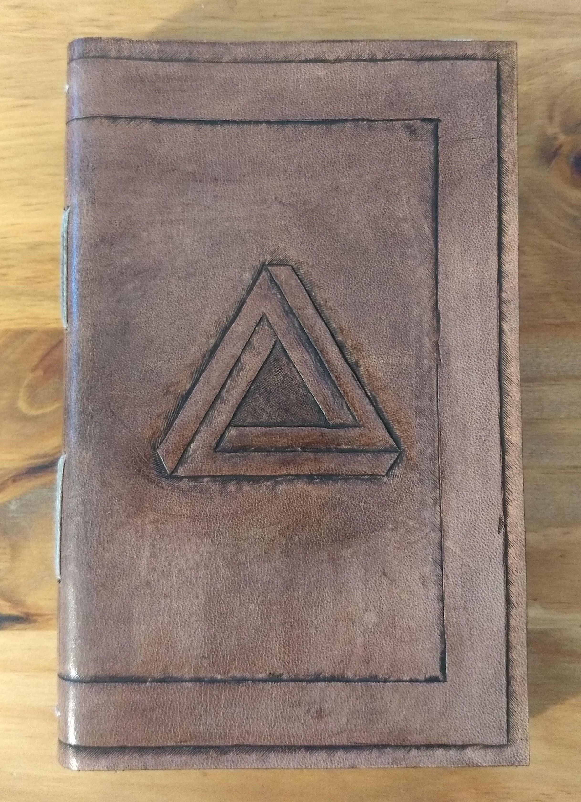

Notebooks





Pouches & Sheaths


Armor & Gear
Contact
I don't currently have a web store per se, but if you're interested in commissioning something, feel free to drop me a line at atelierofashes@gmail.com to discuss it :)